Algebra 2¶
import sympy as sym
import numpy as np
import scipy as sp
import matplotlib.pyplot as plt
from IPython.display import display, Math
1 Summation and products¶
lst = [1,3,4,1,6]
print( sum(lst) )
print( np.sum(lst) )
15
15
np.prod(lst)
72
# cumulative summation
np.cumsum(lst)
plt.plot(lst,'rs-')
plt.plot(np.cumsum(lst),'bo-')
plt.legend({'list','cumsum'})
plt.show()
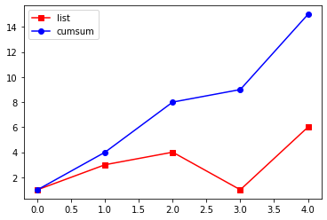
1.1 Exercise¶
# generate numerator
num = np.arange(1,6)
den = num**2
ans1 = np.sum(num) / np.sum(den)
ans2 = 1 / np.sum(num)
print('Option 1 = %s\nOption 2 = %s' %(ans1,ans2))
Option 1 = 0.2727272727272727
Option 2 = 0.06666666666666667
# then repeat with prod
ans1 = np.prod(num) / np.prod(den)
ans2 = 1 / np.prod(num)
print('Option 1 = %s\nOption 2 = %s' %(ans1,ans2))
Option 1 = 0.008333333333333333
Option 2 = 0.008333333333333333
2 Differences (discrete derivative)¶
print(2-1)
1
v = [1,2]
np.diff(v)
array([1])
v = [1,2,4,-10]
np.diff(v)
array([ 1, 2, -14])
v = np.arange(0,11)
print(v)
print(np.diff(v))
print(np.diff(v,2))
print(np.diff(np.diff(v)))
[ 0 1 2 3 4 5 6 7 8 9 10]
[1 1 1 1 1 1 1 1 1 1]
[0 0 0 0 0 0 0 0 0]
[0 0 0 0 0 0 0 0 0]
2.1 Exercise¶
# plot x^2 and its derivative
x = np.linspace(-2,2,101)
f = x**2
df = np.diff(f)
plt.plot(x,f,label='f')
plt.plot(x[0:-1],df,'r',label='df')
plt.axis([-2,2,-1,2])
plt.grid()
plt.legend()
plt.show()
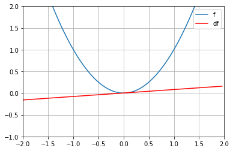
3 Roots of polynomials¶
### the equation:
# 3x^2 + 2x - 1
# define the coefficients
coefs = [3,2,-1]
# and solve
roots = np.roots(coefs)
print(roots)
[-1. 0.33333333]
# solve
from sympy.abc import x
eq = 3*x**2 + 2*x - 1
for i in roots:
display(Math('\\text{At x=}%g\\text{, }%s = %g' %
(i, sym.latex(eq), eq.subs(x, i))))
\[\displaystyle \text{At x=}-1\text{, }3 x^{2} + 2 x - 1 = 0\]
\[\displaystyle \text{At x=}0.333333\text{, }3 x^{2} + 2 x - 1 = -5.55112e-17\]
# zero-degree polynomial
try:
np.roots(8)
except Exception as E:
print("Exception: {}".format(type(E).__name__))
print("Exception message: {}".format(E))
Exception: TypeError
Exception message: dispatcher for __array_function__ did not return an iterable
3.1 Exercise¶
# for different polynomial degrees, count the number of roots
for i in range(1,11):
coefs = np.arange(1,i+1)
print('A degree-%s polynomial has %s roots' %(len(coefs)-1,len(np.roots(coefs))))
A degree-0 polynomial has 0 roots
A degree-1 polynomial has 1 roots
A degree-2 polynomial has 2 roots
A degree-3 polynomial has 3 roots
A degree-4 polynomial has 4 roots
A degree-5 polynomial has 5 roots
A degree-6 polynomial has 6 roots
A degree-7 polynomial has 7 roots
A degree-8 polynomial has 8 roots
A degree-9 polynomial has 9 roots
4 The quadratic equation and functions¶
# the quadratic equation
a = 2
b = 7
c = 5
quadeqP = ( -b + np.sqrt(b**2 - 4*a*c) ) / (2*a)
quadeqM = ( -b - np.sqrt(b**2 - 4*a*c) ) / (2*a)
print(quadeqP,quadeqM)
-1.0 -2.5
# Note that numpy does not handle complex results; you can use scipy instead
a = 3
b = 7
c = 5
quadeqP = ( -b + sp.sqrt(b**2 - 4*a*c) ) / (2*a)
quadeqM = ( -b - sp.sqrt(b**2 - 4*a*c) ) / (2*a)
print(quadeqP,quadeqM)
(-1.1666666666666665+0.5527707983925666j) (-1.1666666666666665-0.5527707983925666j)
/home/austin/anaconda3/envs/gluon/lib/python3.6/site-packages/ipykernel_launcher.py:7: DeprecationWarning: scipy.sqrt is deprecated and will be removed in SciPy 2.0.0, use numpy.lib.scimath.sqrt instead import sys /home/austin/anaconda3/envs/gluon/lib/python3.6/site-packages/ipykernel_launcher.py:8: DeprecationWarning: scipy.sqrt is deprecated and will be removed in SciPy 2.0.0, use numpy.lib.scimath.sqrt instead
# as a function!
def quadeq(a,b,c):
# initialize
out = sp.zeros(2)
# compute
out[0] = ( -b - sp.sqrt(b**2 - 4*a*c) ) / (2*a)
out[1] = ( -b + sp.sqrt(b**2 - 4*a*c) ) / (2*a)
# output
return out
# test!
print(quadeq(2,7,2))
[-3.18614066 -0.31385934]
/home/austin/anaconda3/envs/gluon/lib/python3.6/site-packages/ipykernel_launcher.py:6: DeprecationWarning: scipy.zeros is deprecated and will be removed in SciPy 2.0.0, use numpy.zeros instead /home/austin/anaconda3/envs/gluon/lib/python3.6/site-packages/ipykernel_launcher.py:9: DeprecationWarning: scipy.sqrt is deprecated and will be removed in SciPy 2.0.0, use numpy.lib.scimath.sqrt instead if __name__ == '__main__': /home/austin/anaconda3/envs/gluon/lib/python3.6/site-packages/ipykernel_launcher.py:10: DeprecationWarning: scipy.sqrt is deprecated and will be removed in SciPy 2.0.0, use numpy.lib.scimath.sqrt instead # Remove the CWD from sys.path while we load stuff.
4.1 Exercise¶
a = 1
b = range(-5,6)
c = range(-2,11)
M = np.zeros((len(b),len(c)))
for i in range(0,len(b)):
for j in range(0,len(c)):
M[i,j] = quadeq(a,b[i],c[j])[0]
plt.imshow(M,extent=[ c[0],c[-1],b[0],b[-1] ])
plt.xlabel('c')
plt.ylabel('b')
plt.title('a='+str(a))
plt.colorbar()
plt.show()
/home/austin/anaconda3/envs/gluon/lib/python3.6/site-packages/ipykernel_launcher.py:6: DeprecationWarning: scipy.zeros is deprecated and will be removed in SciPy 2.0.0, use numpy.zeros instead /home/austin/anaconda3/envs/gluon/lib/python3.6/site-packages/ipykernel_launcher.py:9: DeprecationWarning: scipy.sqrt is deprecated and will be removed in SciPy 2.0.0, use numpy.lib.scimath.sqrt instead if __name__ == '__main__': /home/austin/anaconda3/envs/gluon/lib/python3.6/site-packages/ipykernel_launcher.py:10: DeprecationWarning: scipy.sqrt is deprecated and will be removed in SciPy 2.0.0, use numpy.lib.scimath.sqrt instead # Remove the CWD from sys.path while we load stuff. /home/austin/anaconda3/envs/gluon/lib/python3.6/site-packages/ipykernel_launcher.py:9: ComplexWarning: Casting complex values to real discards the imaginary part if __name__ == '__main__': /home/austin/anaconda3/envs/gluon/lib/python3.6/site-packages/ipykernel_launcher.py:10: ComplexWarning: Casting complex values to real discards the imaginary part # Remove the CWD from sys.path while we load stuff.
5 Complex numbers: addition and subtraction¶
# some correct and incorrect ways to get the imaginary operator
print( 1j )
print( np.sqrt(-1) ) # doesn't work!
print( np.sqrt(-1,dtype='complex') )
print( (-1)**(1/2) ) # OK but not a good solution
print(sym.I) # in sympy
1j
nan
1j
(6.123233995736766e-17+1j)
I
/home/austin/anaconda3/envs/gluon/lib/python3.6/site-packages/ipykernel_launcher.py:4: RuntimeWarning: invalid value encountered in sqrt after removing the cwd from sys.path.
# create complex numbers
real_part = 4
imag_part = -6
cn1 = np.complex(real_part,imag_part)
cn2 = real_part + 1j*imag_part
# display
print(cn1)
print(cn2)
print( type(cn2) )
(4-6j)
(4-6j)
<class 'complex'>
# now for adding and subtracting
z1 = np.complex(4,5)
z2 = np.complex(6,-2)
print(z1+z2)
print(z1-z2)
(10+3j)
(-2+7j)
# extracting the real and imaginary parts of a complex number
print( 'The real part of z is ' + str(np.real(z1)))
print( 'The imaginary part of z is ' + str(np.imag(z1)))
The real part of z is 4.0
The imaginary part of z is 5.0
5.1 Exercise¶
# show that the complex addition is real parts summed and imaginary parts summed
w = np.complex(2,4)
z = np.complex(5,6)
# sum each part individually
realsum = np.real(w) + np.real(z)
imagsum = np.imag(w) + np.imag(z)
wPlusz1 = np.complex(realsum,imagsum)
# sum together in one go
wPlusz2 = w+z
print(wPlusz1)
print(wPlusz2)
(7+10j)
(7+10j)
6 Complex numbers: conjugate and multiplication¶
# create complex numbers
z1 = np.complex(4,5)
z2 = np.complex(6,-2)
# multiplication the "manual" way
w = np.real(z1)*np.real(z2) + np.real(z1)*np.imag(z2)*1j + np.imag(z1)*np.real(z2)*1j + np.imag(z1)*np.imag(z2)*1j*1j
print(w)
sym.sympify(w)
(34+22j)
\[\displaystyle 34.0 + 22.0 i\]
# or let Python do the hard work ;)
sym.sympify(z1*z2)
\[\displaystyle 34.0 + 22.0 i\]
# complex conjugate
z1 = np.complex(4,3)
z2 = np.complex(4,-3)
print( np.conj(z1) )
print( np.conj(z2) )
(4-3j)
(4+3j)
6.1 Exercise¶
a,b = sym.symbols('a,b')#,real=True)
z = a + b*sym.I
sym.simplify( sym.expand( z*sym.conjugate(z) ) )
\[\displaystyle a \overline{a} - i a \overline{b} + i b \overline{a} + b \overline{b}\]
# with nicer printing
result = sym.simplify( sym.expand( z*sym.conjugate(z) ) )
display(Math('z\\times z^* = %s' %sym.latex(result)))
\[\displaystyle z\times z^* = a \overline{a} - i a \overline{b} + i b \overline{a} + b \overline{b}\]
7 Complex numbers: division¶
# create a complex number
z1 = np.complex(4,2)
z2 = np.complex(3,-5)
display(Math('\\frac{%s}{2} = %s' %(z1,z1/2) ))
\[\displaystyle \frac{(4+2j)}{2} = (2+1j)\]
display(Math('\\frac{%s \\times %s}{%s \\times %s} = \\frac{%s}{%s} = %s' # sometimes you need \
%(z1,np.conj(z2), z2, np.conj(z2),
z1*np.conj(z2), z2*np.conj(z2), sym.latex(sym.sympify(z1/z2)) )))
\[\displaystyle \frac{(4+2j) \times (3+5j)}{(3-5j) \times (3+5j)} = \frac{(2+26j)}{(34+0j)} = 0.0588235294117647 + 0.764705882352941 i\]
7.1 Exercises¶
# create two numbers
z = np.complex(4,2)
w = np.complex(3,5)
# the parts related to the left multiplicand
left_numer = (z-1) * (z*w+w)
left_denom = w*z-w
left_part = left_numer / left_denom
# the parts related to the right multiplicand
right_numer = (w-1) * (1-w)
right_denom = -w**2*z - w**2 + 2*w*z + 2*w - z - 1
right_part = right_numer / right_denom
# put them together
solution = left_part * right_part
# and print!
print(solution)
(1+0j)
8 Graphing complex numbers¶
# create a complex number
z = np.complex(2,3)
# not so simple...
plt.plot(z,'ro')
plt.show()
# how it's done
plt.plot(np.real(z),np.imag(z),'ro')
plt.xlabel('Real')
plt.ylabel('Imag')
plt.grid()
plt.axis([-4,4,-4,4])
plt.show()
/home/austin/anaconda3/envs/gluon/lib/python3.6/site-packages/numpy/core/_asarray.py:85: ComplexWarning: Casting complex values to real discards the imaginary part return array(a, dtype, copy=False, order=order)
# drawing complex numbers as lines from the origin
# create complex numbers
z1 = np.complex(4,5)
z2 = np.complex(6,-2)
# draw the lines
plt.plot([0,np.real(z1)],[0,np.imag(z1)],color='b',label='z1')
plt.plot([0,np.real(z2)],[0,np.imag(z2)],'b--',label='z2')
# new variables for convenience
z1Pz2 = z1+z2
z1Mz2 = z1-z2
# draw more lines!
plt.plot([0,np.real(z1Pz2)],[0,np.imag(z1Pz2)],'r',label='z1+z2',linewidth=2)
plt.plot([0,np.real(z1Mz2)],[0,np.imag(z1Mz2)],'k',label='z1-z2',linewidth=2)
# make the plot look a bit nicer
plt.axis('square')
plt.axis(np.multiply([-1,1,-1,1],np.abs(z1Pz2)))
plt.grid(True)
plt.legend()
plt.show()
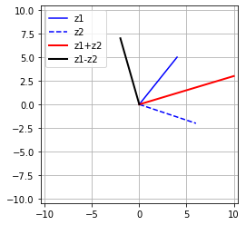
8.1 Exercises¶
# adding two complex numbers
z1 = np.complex(-3,1)
z2 = np.complex(-1,1)
# their sum
z3 = z1+z2
plt.plot([0,np.real(z1)],[0,np.imag(z1)],label='z1')
plt.plot([0,np.real(z2)],[0,np.imag(z2)],label='z2')
plt.plot([0,np.real(z3)],[0,np.imag(z3)],label='z1+z2')
plt.axis('square')
plt.axis([-5,5,-5,5])
plt.legend()
plt.grid()
plt.xlabel('Real')
plt.ylabel('Imag')
plt.show()
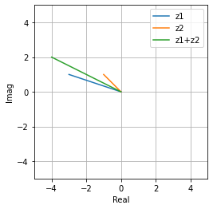
# multiplying two complex numbers
# their product
z3 = z1*z2
plt.plot([0,np.real(z1)],[0,np.imag(z1)],label='z1')
plt.plot([0,np.real(z2)],[0,np.imag(z2)],label='z2')
plt.plot([0,np.real(z3)],[0,np.imag(z3)],label='$z1\\times z2$')
plt.axis('square')
plt.axis([-5,5,-5,5])
plt.legend()
plt.grid()
plt.xlabel('Real')
plt.ylabel('Imag')
plt.show()
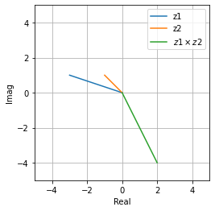
9 Revising the quadratic equation with complex numbers¶
# as a function!
def quadeq(a,b,c):
# initialize
out = sp.zeros(2,dtype=complex)
# compute
out[0] = ( -b - sp.sqrt(b**2 - 4*a*c) ) / (2*a)
out[1] = ( -b + sp.sqrt(b**2 - 4*a*c) ) / (2*a)
# output
return out
x = 1
y = range(-5,6)
z = range(-2,11)
M = np.zeros((len(y),len(z)),dtype=complex)
for i in range(0,len(y)):
for j in range(0,len(z)):
M[i,j] = quadeq(1,y[i],z[j])[0]
plt.subplot(1,3,1)
plt.imshow(sp.real(M))
plt.axis('off'), plt.title('real part')
plt.subplot(132)
plt.imshow(sp.imag(M))
plt.axis('off'), plt.title('imaginary part')
plt.subplot(133)
plt.imshow(sp.absolute(M))
plt.axis('off'), plt.title('magnitude')
plt.show()
/home/austin/anaconda3/envs/gluon/lib/python3.6/site-packages/ipykernel_launcher.py:6: DeprecationWarning: scipy.zeros is deprecated and will be removed in SciPy 2.0.0, use numpy.zeros instead /home/austin/anaconda3/envs/gluon/lib/python3.6/site-packages/ipykernel_launcher.py:9: DeprecationWarning: scipy.sqrt is deprecated and will be removed in SciPy 2.0.0, use numpy.lib.scimath.sqrt instead if __name__ == '__main__': /home/austin/anaconda3/envs/gluon/lib/python3.6/site-packages/ipykernel_launcher.py:10: DeprecationWarning: scipy.sqrt is deprecated and will be removed in SciPy 2.0.0, use numpy.lib.scimath.sqrt instead # Remove the CWD from sys.path while we load stuff. /home/austin/anaconda3/envs/gluon/lib/python3.6/site-packages/ipykernel_launcher.py:13: DeprecationWarning: scipy.real is deprecated and will be removed in SciPy 2.0.0, use numpy.real instead del sys.path[0] /home/austin/anaconda3/envs/gluon/lib/python3.6/site-packages/ipykernel_launcher.py:17: DeprecationWarning: scipy.imag is deprecated and will be removed in SciPy 2.0.0, use numpy.imag instead /home/austin/anaconda3/envs/gluon/lib/python3.6/site-packages/ipykernel_launcher.py:21: DeprecationWarning: scipy.absolute is deprecated and will be removed in SciPy 2.0.0, use numpy.absolute instead
10 The unit circle¶
# create a unit circle via trigonometry
# define the phase angles
x = np.linspace(0,2*np.pi,100)
# generate the plot
plt.plot(np.cos(x),np.sin(x),'k')
# draw axis lines
plt.plot([-1.3,1.3],[0,0],'--',color=[.8,.8,.8])
plt.plot([0,0],[-1.3,1.3],'--',color=[.8,.8,.8])
# make it look nicer
plt.axis('square')
plt.axis([-1.3,1.3,-1.3,1.3])
plt.xlabel('cosine(x)')
plt.ylabel('sine(x)')
plt.plot()
plt.show()
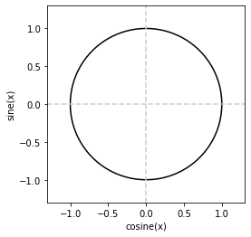
# draw the circle again
plt.plot(np.cos(x),np.sin(x),'k')
# now draw a vector
angle = np.pi/4
plt.plot([0,np.cos(angle)],[0,np.sin(angle)],'r',linewidth=3)
# make it look nicer
plt.axis('square')
plt.xlabel('cosine(x)')
plt.ylabel('sine(x)')
plt.axis([-1.3,1.3,-1.3,1.3])
plt.show()
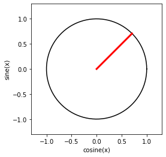
10.1 Exercises¶
# something with log-space increases in angle
x = np.linspace(-3,1.83,50)
a = np.exp(x)
for i in a:
plt.plot([0,np.cos(i)],[0,np.sin(i)])
# make it look nicer
plt.axis('square')
plt.axis('off')
plt.show()
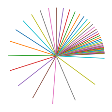
11 Natural exponent and logarithm¶
# e^x
x = np.linspace(-3,3,100)
plt.plot(x,np.exp(x))
plt.xlabel('x')
plt.ylabel('$e^x$')
plt.show()
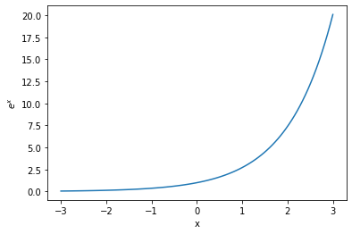
plt.plot(x,np.log(x))
plt.xlabel('x')
plt.ylabel('log(x)')
plt.show()
/home/austin/anaconda3/envs/gluon/lib/python3.6/site-packages/ipykernel_launcher.py:1: RuntimeWarning: invalid value encountered in log """Entry point for launching an IPython kernel.
11.1 Exercise¶
# visualize that log and e are inverses of each other (positive values only)
x = np.linspace(.0001,10,10)
# plot it both ways
plt.plot(x,np.log(np.exp(x)))
plt.plot(x,np.exp(np.log(x)),'o')
plt.axis('square')
plt.legend({'$\\log(e^x)$','$e^{\\log(x)}$'})
plt.show()
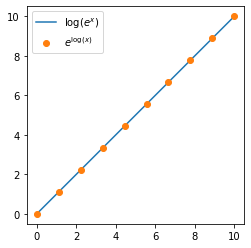
12 Find a specific point on a Gaussian¶
# the key parameter (FWHM - full width at half-maximum)
h = 1
# "Time" variable
t = np.linspace(-3,3,1001)
# gaussian
g = np.exp( -4*np.log(2)*t**2 / h**2 )
# and plot
plt.plot(t,g)
plt.xlabel('t')
plt.ylabel('y')
plt.title('Gaussian with FWHM=' + str(h))
plt.show()
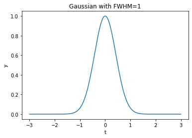
# find the x-axis value (here variable 't') for a given function value
yVal2find = .5
# apply the formula shown in the slides
tvals = h*np.sqrt( np.log(yVal2find)/(-4*np.log(2)) )
# print out the results
print(tvals,-tvals)
0.5 -0.5
12.1 Exercise¶
N = 100 # number of Gaussians
h = np.zeros(N)
G = np.zeros((N,len(t)))
for i in range(N):
h[i] = (i+1)/N
G[i,:] = np.exp( -4*np.log(2)*t**2 / h[i]**2 )
plt.pcolormesh(t,h,G)
plt.xlabel('t')
plt.ylabel('h')
plt.show()
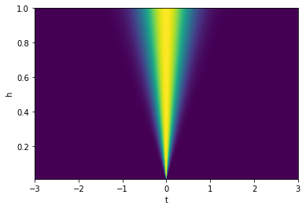
13 Graphing the complex roots of unity¶
# confirm that the roots of unity produce 1
n = 5
for k in range(0,n):
root = sym.exp( (2*k*sym.pi*sym.I)/n )
display(Math('%s \\Rightarrow %s' %(sym.latex(root),sym.latex(root**n) )))
# print(roots)
# print(np.real(np.prod(roots)))
\[\displaystyle 1 \Rightarrow 1\]
\[\displaystyle e^{\frac{2 i \pi}{5}} \Rightarrow 1\]
\[\displaystyle e^{\frac{4 i \pi}{5}} \Rightarrow 1\]
\[\displaystyle e^{- \frac{4 i \pi}{5}} \Rightarrow 1\]
\[\displaystyle e^{- \frac{2 i \pi}{5}} \Rightarrow 1\]
# parameter for number of roots to show
n = 6
for k in range(0,n):
# compute this root
root = np.exp( (2*k*np.pi*1j)/n )
# plot it
plt.plot([0,np.real(root)],[0,np.imag(root)],linewidth=3)
# generate the plot with the unit circle on top
x = np.linspace(0,2*np.pi,100) # copied from previous lecture!
plt.plot(np.cos(x),np.sin(x),color='gray')
# draw axis lines
plt.plot([-1.3,1.3],[0,0],'--',color='gray')
plt.plot([0,0],[-1.3,1.3],'--',color='gray')
# make the plot look nicer
plt.axis([-1.3,1.3,-1.3,1.3])
plt.axis('square')
plt.axis('off')
plt.title('The %g %gth roots of 1' %(n,n))
plt.show()
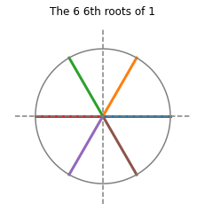
13.1 Exercise¶
# parameter for number of roots to show
n = 200
color = np.linspace(0,.9,n)
for k in range(0,n):
# compute this root
root = k*np.exp( (2*k*np.pi*1j)/n )
# plot it
plt.plot([0,np.real(root)],[0,np.imag(root)],linewidth=2,color=[color[k],color[k],color[k]])
# make the plot look nicer
plt.axis('square')
plt.axis('off')
plt.show()
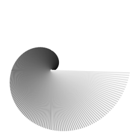
14 Log-spaced and linearly spaced numbers¶
# you've already seen linearly spaced numbers...
np.linspace(-2,4,10)
array([-2. , -1.33333333, -0.66666667, 0. , 0.66666667,
1.33333333, 2. , 2.66666667, 3.33333333, 4. ])
# log-spaced
np.logspace(1,2,10)
array([ 10. , 12.91549665, 16.68100537, 21.5443469 ,
27.82559402, 35.93813664, 46.41588834, 59.94842503,
77.42636827, 100. ])
# the way you'd probably expect them to be
a = np.log10(2.3)
b = np.log10(14.3)
n = 14
np.logspace(a,b,n)
array([ 2.3 , 2.64712604, 3.04664186, 3.50645436, 4.03566376,
4.64474376, 5.34574877, 6.15255251, 7.0811226 , 8.14983655,
9.37984546, 10.7954927 , 12.4247956 , 14.3 ])
# the way you'd probably expect them to be
a = np.log10(1)
b = np.log10(5)
n = 5
np.logspace(a,b,n)
array([1. , 1.49534878, 2.23606798, 3.34370152, 5. ])
14.1 Exercise¶
# show that at small scales, lin and log are close.
# this is why local linear approximations to nonlinear functions are so useful
a = 2
b = 100
n = 50
lo = np.logspace(np.log10(a),np.log10(b),n)
li = np.linspace(a,b,n)
plt.plot(li,lo,label='log')
plt.plot(li,li,label='linear')
plt.legend()
plt.axis('square')
plt.show()
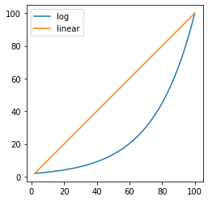
15 Logarithm properties: Multiplication and division¶
a = 3
b = 4
# test the multiplication rule
res1 = np.log(a*b)
res2 = np.log(a) * np.log(b)
res3 = np.log(a) + np.log(b)
display(Math('\\log(%g\\times%g) = %g' %(a,b,res1)))
display(Math('\\log(%g)\\times\\log(%g) = %g' %(a,b,res2)))
display(Math('\\log(%g)+\\log(%g) = %g' %(a,b,res3)))
display(Math('\\log(%g\\times%g) \\neq \\log(%g)\\times\\log(%g)' %(a,b,a,b)))
display(Math('\\log(%g\\times%g) = \\log(%g)+\\log(%g)' %(a,b,a,b)))
\[\displaystyle \log(3\times4) = 2.48491\]
\[\displaystyle \log(3)\times\log(4) = 1.523\]
\[\displaystyle \log(3)+\log(4) = 2.48491\]
\[\displaystyle \log(3\times4) \neq \log(3)\times\log(4)\]
\[\displaystyle \log(3\times4) = \log(3)+\log(4)\]
# repeat for division
res1 = np.log(a/b)
res2 = np.log(a) / np.log(b)
res3 = np.log(a) - np.log(b)
display(Math('\\log(\\frac{%g}{%g}) = %g' %(a,b,res1)))
display(Math('\\log(%g)/\\log(%g) = %g' %(a,b,res2)))
display(Math('\\log(%g)-\\log(%g) = %g' %(a,b,res3)))
display(Math('\\log{\\left(\\frac{%g}{%g}\\right)} \\neq \\frac{\\log(%g)}{\\log(%g)}' %(a,b,a,b)))
display(Math('\\log{\\left(\\frac{%g}{%g}\\right)} = \\log(%g)-\\log(%g)' %(a,b,a,b)))
\[\displaystyle \log(\frac{3}{4}) = -0.287682\]
\[\displaystyle \log(3)/\log(4) = 0.792481\]
\[\displaystyle \log(3)-\log(4) = -0.287682\]
\[\displaystyle \log{\left(\frac{3}{4}\right)} \neq \frac{\log(3)}{\log(4)}\]
\[\displaystyle \log{\left(\frac{3}{4}\right)} = \log(3)-\log(4)\]
15.1 Exercise¶
# exponential rule
expr1 = np.log(a**b)
expr2 = b*np.log(a)
print(expr1-expr2)
0.0
expr1 = np.log(3**3)
expr2 = 3*np.log(3)
expr3 = np.log(3) + np.log(3) + np.log(3)
print(expr1,expr1-expr2,expr1-expr3)
3.295836866004329 0.0 0.0
16 Scientific notation¶
# write the following number in scientific notation
x = 2938429348
'{:,e}'.format(x)
'2.938429e+09'
# numbers are easier to read with commas!
# or f
'{:,d}'.format(x)
'2,938,429,348'
# another way...
'%.2e' %(x)
'2.94e+09'
# notice this is a string
s = '%.3e' %(x)
print(s)
print( type(s) )
# so you can index or slice parts of it
s[2:4]
2.938e+09
<class 'str'>
'93'
16.1 Exercise¶
# list the number
num = 2342
# order of magnitude
orderOfMag = int(np.floor(np.log10(abs(num))))
# convert to scientific notation and get the characters before the period
numstr = '{:,e}'.format(num)
wheredot = numstr.find('.')
scinot = numstr[:wheredot]
display(Math( '%s\\text{ is }%s\\text{ orders of magnitude, }\\approx %s\\times10^{%g}' \
%(num,orderOfMag,scinot,orderOfMag) ))
\[\displaystyle 2342\text{ is }3\text{ orders of magnitude, }\approx 2\times10^{3}\]
17 Maxima and minima of a function¶
# max and argmax
lst = [-4,5.5,3,2]
print(np.max(lst))
print(np.argmax(lst))
5.5
1
# method: evaluate specific points in the function
# x range
x = np.linspace(0,2*np.pi,20)
# the function f(x)
fx = -( np.cos(x) + x**(1/2) )
# find the maximum value of this function
fmax = np.max(fx)
print(fmax)
# but we also need to know the location where this maximum is obtained
fmaxidx = np.argmax(fx)
print(fmaxidx)
# draw the function
plt.plot(x,fx,'bo-')
plt.plot(x[fmaxidx],fmax,'rs')
plt.xlabel('radians')
plt.xticks(np.round(np.arange(0,2*np.pi,np.pi/4),2))
plt.show()
-0.7388185920927908
9
# minimum
# the range and the function
x = np.linspace(-2,2,50)
fx = x**3 + x**4
# find the minimum
fminidx = np.argmin(fx)
# draw the function
plt.plot(x,fx,'bo-')
plt.plot(x[fminidx],fx[fminidx],'ms',markersize=10)
plt.ylim([-.2,.2])
plt.xlim([-1.2,.5])
plt.show()
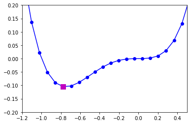
17.1 Exercise¶
from scipy.signal import find_peaks
# x range
x = np.linspace(0,12*np.pi,200)
# the function f(x)
fx = -( np.cos(x) + x**(1/2) )
# find peaks
peeks = find_peaks(fx)
print(peeks)
# draw the function
plt.plot(x,fx)
plt.plot(x[peeks[0]],fx[peeks[0]],'o')
plt.show()
(array([ 15, 49, 82, 116, 149, 182]), {})
18 Even and odd functions¶
# create an even function
x = np.linspace(-5,5,20)
fEven = x**2
fEvenNegative = (-x)**2
plt.plot(x,fEven)
plt.plot(x,fEvenNegative,'ro')
plt.show()
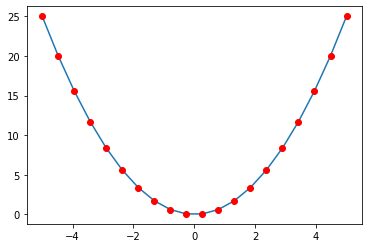
# create an odd function
x = np.linspace(-5,5,20)
fOdd = x**3
fOddNegative = (-x)**3
plt.plot(x,fOdd)
plt.plot(x,fOddNegative,'ro')
plt.plot(x,-fOddNegative,'gs')
plt.show()
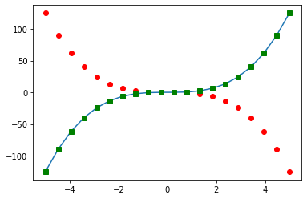
18.1 Exercise¶
# using graphing to infer whether cos and sine are even or odd functions
theta = np.linspace(-2*np.pi,2*np.pi,40)
cosfun = np.cos(theta)
cosfunN = np.cos(-theta)
plt.plot(theta,cosfun)
plt.plot(theta,cosfunN,'ro')
plt.show()
# repeat for sin
sinfun = np.sin(theta)
sinfunN = np.sin(-theta)
plt.plot(theta,sinfun)
plt.plot(theta,sinfunN,'ro')
plt.plot(theta,-sinfunN,'ys')
plt.show()
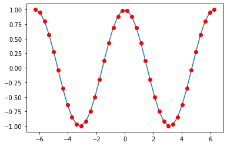
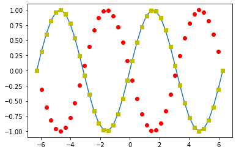
19 Arithmetic and geometric sequences¶
# arithmetic sequence
a = 2
d = 3
maxn = 6
ariseq = a + d*np.arange(0,maxn)
print(ariseq)
[ 2 5 8 11 14 17]
# geometric sequence
a = 2
r = 3
geoseq = a * r**np.arange(0,maxn)
print(geoseq)
[ 2 6 18 54 162 486]
plt.plot(ariseq,'ks',label='arithmetic')
plt.plot(geoseq,'ro',label='geometric')
plt.xlim([-.5,maxn-.5])
plt.legend()
plt.show()
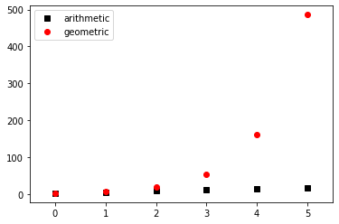
19.1 Exercise¶
# confirm that nth term is a+(n-1)*d and a*r**(n-1) by indexing and direct computation
# parameters
a = 2
d = 3
maxn = 10
# compute sequences
ariseq = a + d*np.arange(0,maxn)
geoseq = a * d**np.arange(0,maxn)
# which element to find?
nth = 6
# find by direct computation
ariDirect = a + (nth-1)*d
geoDirect = a * d**(nth-1)
# compare against order in sequence
print(ariseq[nth-1],ariDirect)
print(geoseq[nth-1],geoDirect)
17 17
486 486
20 Algebra BUG HUNT!¶
# create a list
lst = [1,3,4,1,6]
print( lst )
[1, 3, 4, 1, 6]
# add all the numbers together
print( np.sum(lst) )
15
# plot the cumulative sum of a list of numbers
l = np.arange(-4,10)
plt.plot(l,'rs-')
plt.plot(np.cumsum(1),'bo-')
plt.legend({'list','cumsum'})
plt.show()
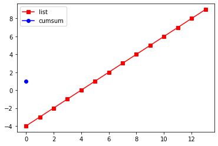
### the equation:
# 4 - 2x + 5x^3
# define the coefficients
coefs = [5,0,-2,4]
# solve
roots = np.roots(coefs)
# and display
from sympy.abc import x
p = sym.Poly(coefs,x)
display(Math(sym.latex(p)))
\[\displaystyle \operatorname{Poly}{\left( 5 x^{3} - 2 x + 4, x, domain=\mathbb{Z} \right)}\]
def quadeq(a,b,c):
# compute
out0 = ( -b - np.sqrt(b**2 - 4*a*c,dtype=complex) ) / (2*a)
out1 = ( -b + np.sqrt(b**2 - 4*a*c,dtype=complex) ) / (2*a)
# output
return [out0,out1]
# test the function
print(quadeq(1,4,2))
[(-3.414213562373095+0j), (-0.5857864376269049+0j)]
# create a complex number
real_part = 4
imag_part = -6
cn = np.complex(real_part,imag_part)
plt.plot(np.real(cn),np.imag(cn),'ro')
plt.grid('on')
plt.axis('square')
plt.axis([-10,10,-10,10])
plt.show()
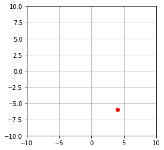
# symbolic complex number
a,b = sym.symbols('a,b',real=True)
z = a + b*sym.I
display(Math('z\\times z^* = %s' %sym.latex(sym.expand(z*sym.conjugate(z)))))
\[\displaystyle z\times z^* = a^{2} + b^{2}\]
# define the phase angles
x = np.linspace(0,2*np.pi,100)
# generate the plot
plt.plot(np.cos(x),np.sin(x),'k')
# draw one vector from the origin
phs = 1*np.pi/4
plt.plot([0,np.cos(phs)],[0,np.sin(phs)],'r-')
plt.plot(np.cos(phs),np.sin(phs),'ro')
# draw axis lines
plt.plot([-1.3,1.3],[0,0],'--',color=[.8,.8,.8])
plt.plot([0,0],[-1.3,1.3],'--',color=[.8,.8,.8])
# make it look nicer
plt.axis('square')
plt.axis([-1.3,1.3,-1.3,1.3])
plt.xlabel('cosine(x)')
plt.ylabel('sine(x)')
plt.plot()
plt.show()
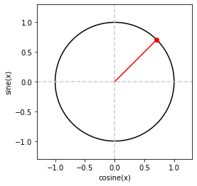
a = 2 # lower bound
b = 100 # upper bound
n = 3 # number of steps
lo = np.logspace(np.log10(a),np.log10(b),n)
li = np.linspace(a,b,n)
plt.plot(li,lo,'s-',label='log')
plt.plot(li,li,'o-',label='linear')
plt.legend()
plt.axis('square')
plt.show()
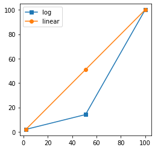
## Goal is to plot the point on the function closest to f(x)=.5
# x range
x = np.linspace(-6,10,20)
# the function f(x)
fx = 1/(1+np.exp(x))
# function maximum
fmaxidx = np.argmin(abs(fx-.5))
# draw the function
plt.plot(x,fx,'bo-')
plt.plot(x[fmaxidx],fx[fmaxidx],'rs')
plt.show()
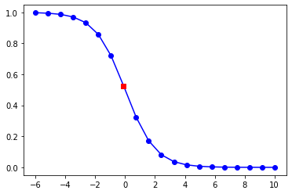
## Goal is to find the local minima by adding one character
from scipy.signal import find_peaks
# x range
x = np.linspace(0,12*np.pi,200)
# the function f(x)
fx = -( np.cos(x) + x**(1/2) )
# find peaks
peeks = find_peaks(-fx)
# draw the function
plt.plot(x,fx)
plt.plot(x[peeks[0]],fx[peeks[0]],'o')
plt.show()
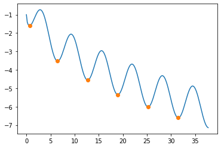